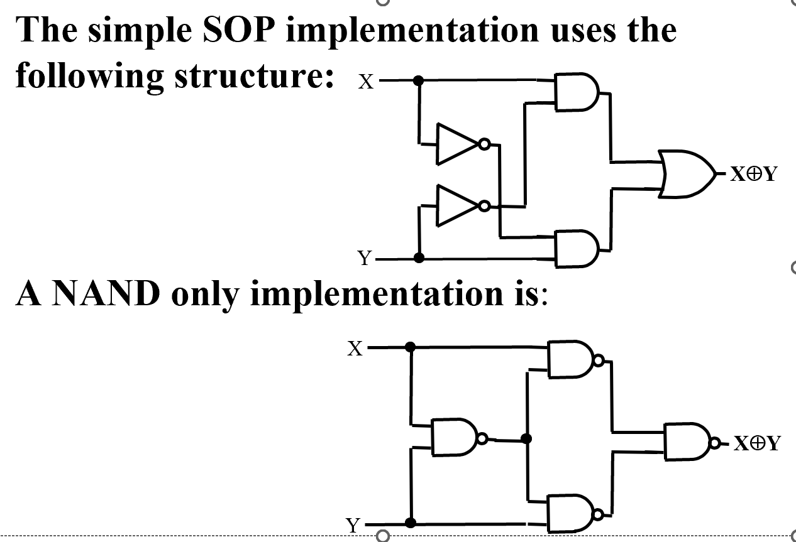
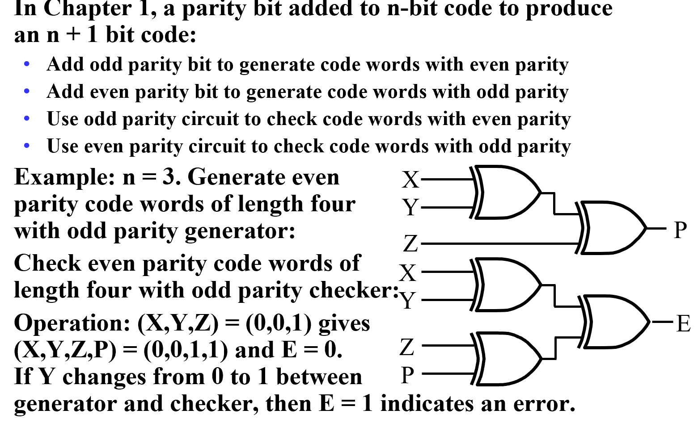

Chapter 2 Combinational Logic
Binary Logic and Gates¶
Gate Delay¶
- In actual physical gates, if one or more input changes causes the output to change, the output change does not occur instantaneously.
- The delay between an input change(s) and the resulting output change is the gate delay denoted by \(t_{G}\)

\(t_{pd}\) [Propagation Delay]¶
Inertial Delay¶
- Rejection Time ["Thin" Pulse cannot take place in real-time circumstances]

NMOS and PMOS¶
- When an \(NMOS\) transistor receives a non-negligible voltage, the connection from the source to the drain acts as a wire. Electricity will flow from the source to the drain uninhibited. This is referred to as a closed circuit.
On the other hand, when an nMOS transistor receives a voltage at around 0 volts, the connection from the source to the drain will be broken, which is referred to as an open circuit.
- The p-type transistor works counter to the n-type transistor.
Whereas the nMOS will form a closed circuit with the source when the voltage is non-negligible, the pMOS will form an open circuit with the source when the voltage is non-negligible.

Tristate gate¶

Common logic gate circuit¶
NAND operation¶
NOR operation¶

AND-OR-INVERT operation¶

Exclusive OR¶
Exclusive NOR¶
Basic concepts of Boolean algebra¶
The XOR identities¶
- \(X\oplus0=X\ X\oplus1=\bar{X}\)
- \(X\oplus X=0\ X\oplus\bar{X}=1\)
- \(X\oplus\bar{Y}=\bar{X}\oplus Y=\overline{X\oplus Y}\)
- \(X\oplus Y=Y\oplus X=X\bar{Y}+\bar{X}Y\)
- \(\overline{X\oplus Y}=XY+\bar{X}\bar{Y}\)
- \((X\oplus Y)\oplus Z=X\oplus(Y\oplus Z)=X\oplus Y\oplus Z\)
Basic properties of Boolean algebra¶
- \((X+Y)(X+Z)=X+YZ\)
- \(\overline{X+Y}=\bar{X}·\bar{Y}\)
- \(\overline{X·Y}=\bar{X}+\bar{Y}\)
- \(A(A+B)=A\)
- \(A+AB=A\)
- \(A(\bar{A}+B)=AB\)
- \(A+\bar{A}B=A+B\)
- \((A+B)(\bar{A}+C)(B+C)=(A+B)(\bar{A}+C)\)
- \(AB+\bar{A}C+BC=AB+\bar{A}C\)
Complementing and Duality rules¶
- For logic function F, interchange AND and OR operators ;complement each constant value and literal, then obtained the new function is the inverse function of the original function is referred to as: \(\bar{F}\)
Note the following two points:
The holding operation priority unchanged, if necessary, add brackets indicate.
Within converting, public non-operation remains unchanged for several variables
- Duality rules: For logic function F ,AND \(\Leftrightarrow\) OR 0 \(\Leftrightarrow\) 1
If F‘ is the F Duality, then F is also F’ of Duality. F and F‘ is mutually Duality formula .
If the two logical functions F and G are equal, then the Duality formula F' and G' are also equal.
Substitution rules¶
Any logical equation that contains a variable A, and if all occurrences of A's position** are replaced with a logical function F, the equation still holds.

Shannon formula¶
– Assuming: Function F contained variables \(x\)、\(\bar{x}\), at "x AND F" operation, variable \(x\) may be replaced by 1 , variable \(\bar{x}\) can be replaced by 0.
– At "x AND F" operation, \(x\) can be "0", \(\bar{x}\) can be replaced with "1" .
\(xf(x,\overline{x},y...)=xf(1,0,y…)\)
\(\overline{x}f(x,\overline{x},y...)=\overline{x} f(0,1,y...)\)
Similarly
\(x+f(x,\bar{x},y……z)=x+f(0,1,y……z)\)
\(\bar{x}+f(x,\bar{x},y……z)=\bar{x}+f(1,0,y……,z)\)

If the function F contains the both of the variables \(x,\bar{x}\) may be follow:

Simplification¶
- Example
OR-AND style simplification¶

Standard Forms¶
Canonical Forms¶
Miniterms¶
Minterms are AND terms with every variable present in either true or complemented form.
Given that each binary variable may appear normal (e.g., x) or complemented (e.g., x ), there are \(2^n\) minterms for n variables. denoted as \(m_i\)
- only one set of variables value make to 1 for any one minterm .
- any two minterms multiplied equal to 0
- Sum of all minterms equal to 1
- Any one minterm is not contained in the original function F,it can be seen as inAnti-function \(\bar{F}\) 。
Maxterms¶
Maxterms are OR terms with every variable in true or complemented form.
Given that each binary variable may appear normal (e.g., x) or complemented (e.g., x), there are \(2^n\) maxterms for n variables. denoted as \(M_i\)
- only one set of variables value make to 0 for any one Maxterm
- sum of any two Maxterms equal to \(M_i+M_j=1 \ i\ne j\)
- Product of all Maxterms equal to 0
- Any one Maxterm is not contained in the original function F,it can be seen as inAnti-function \(\bar{F}\)
Minterm and Maxterm Relationship¶
- \(M_i\) and \(m_i\) is complement \(\overline{M_i}=m_i\)
- \(F=\sum m_i = \overline{\Pi M_i}\)
Function of the canonical forms¶
- Sum of Minterms(SOM)
- Product of Maxterms (POM)
Standard Forms¶
- Standard Sum-of-Products (SOP) : Equations are written as OR of AND terms
- Standard Product-of-Sums (POS) : Equations are written as AND of OR terms
For a logical function SOP or POS is the optimized（两级门，门级数最小）
Karnaugh map of Functio¶
略.
Multi-level circuit optimization¶
COST¶
-
Literal Cost : Just Literal Appearances
-
Gate Input Cost \(G\) : Add AND OR term but exclude one-literal term
AB+CD+E -- 7
BD+ABC+ACD --11
- \(GN\) Add inverters [For the same variable only count once]
Other Gate Types¶
Primitive Gates¶
A gate that can be described using a single primitive operation type (AND or OR) plus an optional inversions.
- BUFFER
The same as a connection -- improve circuit voltage levels and increase the speed of circuit operation.(decrease propagation delay)
Complex Gates¶
Requires more than one primitive operation type for its description.
- XOR Impletations

- Odd Functions and Even Functions
XOR -- Odd Functions
Use inversions -- Even Functions

-
P -- Generate the Parity bit
-
E--Decide whether the translated inf is Error
High-Resistance output (tristate gate)¶
Three-state logic adds a third logic value, Hi-Impedance (\(Hi-Z\)), giving three states: \(0, 1, and\ Hi-Z\) on the outputs.
The 3-State Buffer¶
- Resolving 3-State Values on a Connection
Connection of two 3-state buffer outputs, B1 and B0, to a wire, OUT:

- Data Selection Function with 3-state buffers
- Last Row of the table will never occur
Transmission 3-state gate¶
创建日期: 2024年1月2日 12:12:25